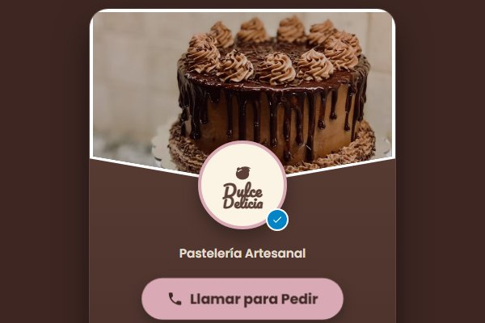
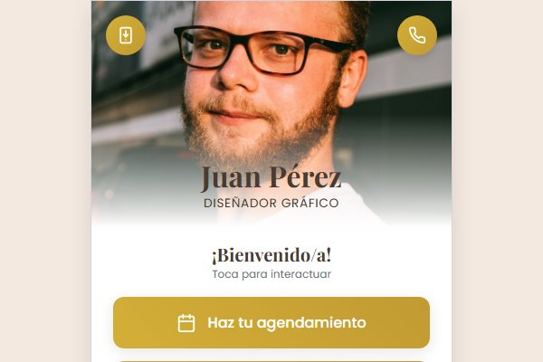

Gana dinero vendiendo tarjetas digitales
Compras a precio de distribuidor (hasta 50% de descuento) o ganas 20% de comisión solo por referir. Sin inversión y con el diseño y el soporte de nuestro lado.
Los dos planes hacen lo mismo en lo esencial: llevar tu presentación a un enlace que se abre en cualquier celular. La diferencia real está en cuánta información necesitas mostrar y cuánto quieres automatizar. Aquí la comparamos con precios y casos concretos.
Para profesionales que necesitan presencia, no catálogo.
Para negocios que muestran productos y precios.
Si comparas los planes por capacidad, queda así de claro:
El detalle completo, con las condiciones de cada uno, está en la página del servicio de tarjetas digitales.
Cuéntanos qué haces y a quién le vendes. En cinco minutos te decimos si con Mini Web Básica es suficiente o si necesitas la Mini Web Pro, sin compromiso y sin tecnicismos.
Para quien vende su tiempo y su criterio: abogados, contadores, odontólogos de una sola sede, entrenadores, consultores, agentes comerciales. Resuelve una sola cosa: que el cliente te contacte sin fricción. Si tu oferta cabe en una lista corta de servicios, Mini Web Básica es suficiente y no vale la pena pagar más.
Aquí entra quien recibe la misma pregunta veinte veces al día: «¿cuánto vale?», «¿tienen disponible?», «¿me mandas fotos?». Restaurantes, pastelerías, salones, tiendas, talleres. El catálogo o menú dentro de la tarjeta responde antes de que el cliente escriba, y el botón de pedido con mensaje precargado reduce el intercambio a un par de mensajes.
Una tarjeta digital no es un gasto de imagen: es un canal que se puede medir. Estos son los indicadores que revisamos con nuestros clientes cada mes.
Con los cuatro primeros números calculas lo más útil: de cada 100 personas que abren tu tarjeta, cuántas te escriben. Si son menos de cinco, el problema no es el tráfico, es lo que muestra la tarjeta. En el caso de la Dra. Puedes verlo en el portafolio de tarjetas digitales.
El proceso es corto y no requiere conocimientos técnicos. Necesitamos seis datos y dos días hábiles.
La entrega estándar es de 24 a 48 horas hábiles y los cambios básicos de contacto, redes, ubicación y precios se actualizan sin costo. Si aún no tienes claro cómo se ve una tarjeta terminada, mira primero ejemplos reales publicados y decide con los ojos, no con la imaginación.
Compras a precio de distribuidor (hasta 50% de descuento) o ganas 20% de comisión solo por referir. Sin inversión y con el diseño y el soporte de nuestro lado.

Si tu plan es Mini Web Pro por el catálogo integrado, este artículo te dice exactamente qué categorías, fotos y botones debe tener para que la gente pida sola.

El agente IA se contrata como servicio aparte. Aquí te explicamos qué resuelve de verdad, cómo se entrena con la información de tu negocio y cuánto cuesta en Colombia.
Dinos a qué te dedicas y te recomendamos el plan exacto que necesitas, con el enlace y el código QR listos para usar.